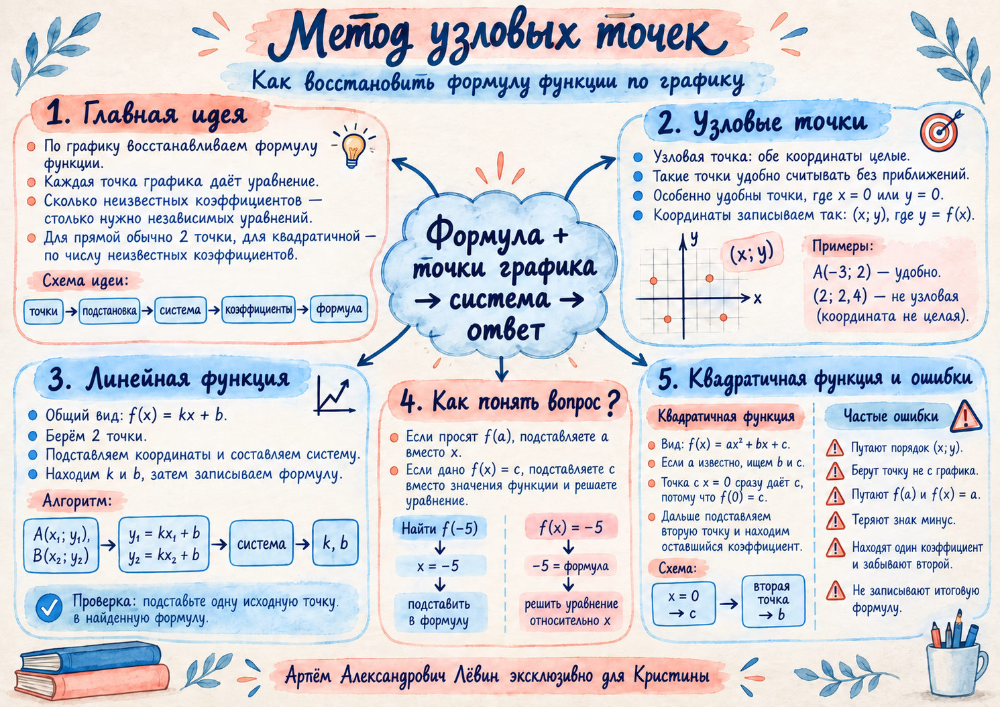

Шаг 1 · Запишите общий вид
Работаем с линейной функцией:
Неизвестны два коэффициента: k и b.
22 сентября 2026 · графики функций
Как восстановить формулу функции по графику, найти неизвестные коэффициенты и правильно понять, что именно требуется подставить в финальном шаге.
Сначала считываем данные с графика без приближений.
В этом пособии узловой называем точку графика, у которой обе координаты — целые числа. Если точка A(x; y) лежит на графике, её координаты удовлетворяют равенству y = f(x).
| Точка | Статус | Почему |
|---|---|---|
| A(−1; −3) | узловая | обе координаты целые |
| B(3; 4) | узловая | обе координаты целые |
| C(2; 2,4) | не узловая | ордината 2,4 не является целым числом |
Для f(x) = kx + b нужны два коэффициента.
Пусть прямая проходит через точки A(−1; −3) и B(3; 4). Две точки с разными абсциссами дают два независимых уравнения для коэффициентов k и b.
Работаем с линейной функцией:
Неизвестны два коэффициента: k и b.
Для A(−1; −3): вместо x подставляем −1, вместо f(x) — −3.
Для B(3; 4) получаем второе уравнение.
Теперь перед нами система из двух уравнений.
Из первого уравнения: b = k − 3. Подставляем это выражение во второе и получаем 4k = 7.
Для f(−5) подставляем x = −5 и получаем −10.
Две похожие записи приводят к разным действиям.
Самая важная развилка финального шага — различить значение аргумента и значение функции.
Число −5 — это значение x.
x = −5 → подставить в формулуЧисло −5 — это значение функции.
−5 = формула → решить уравнениеМеняется формула, логика остаётся прежней.
Пусть известен общий вид f(x) = 2x² + bx + c. Коэффициент при x² уже известен, поэтому требуется определить только b и c.
Точка с x = 0 особенно удобна: при x = 0 слагаемые с x исчезают, и значение функции сразу равно свободному коэффициенту c.
Итоговая функция:
Например, f(−5) = 31.
Проверяем запись до вычислений.
При переносе слагаемого −3k в другую часть уравнения его знак меняется.
Задания совпадают с тренировочным блоком пособия.

A(−2; 3), B(1,5; 4), C(0; −5), D(7; 1/2), E(3; 4).
Ответ: A, C, E.
Ответ: f(1) = 5; x = 0.
Ответ: f(x) = 3x/2 + 1/2; f(−5) = −7.
Ответ: f(x) = 5x/4 + 3/4; f(−9) = −21/2.
Ответ: f(x) = 3x/8 − 1/2; x = 8.
Ответ: b = 3, c = −4, f(2) = 10.
Ответ: b = 8, c = −3, f(x) = −2x² + 8x − 3, f(−1) = −13.
Отмечено: 0 из 5.